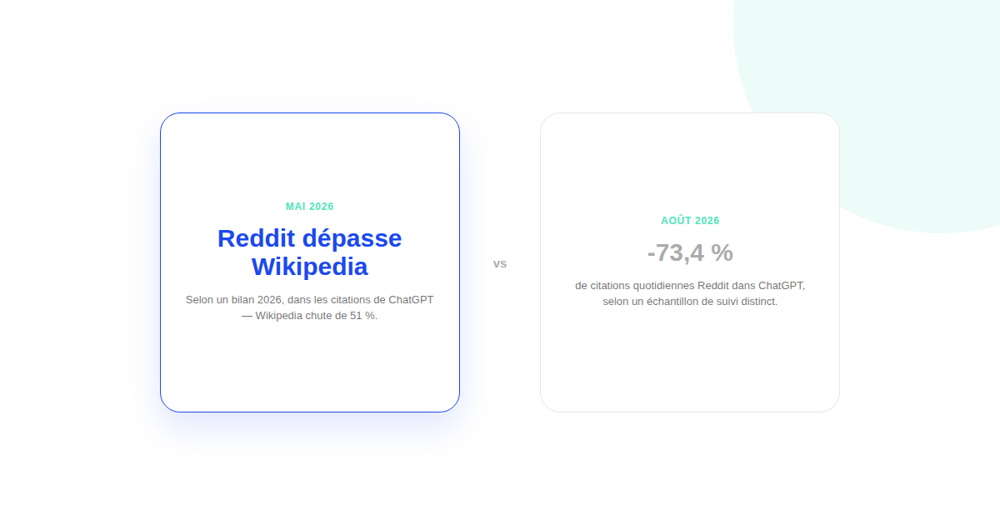
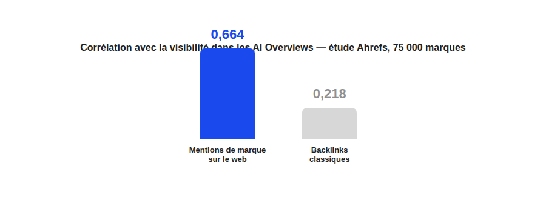

Reddit et visibilité dans ChatGPT : le levier est-il en train de s'effondrer ?
Une étude affirme que Reddit a dépassé Wikipedia dans les citations de ChatGPT en mai 2026. Une autre mesure, trois mois plus tard, une chute de 73 % de ces mêmes citations. Les deux ne peuvent pas être pleinement vraies en même temps — ce qui en dit beaucoup sur la fiabilité d'une stratégie bâtie sur une seule étude.

Reddit est devenu, en quelques mois, l'un des sujets les plus débattus du GEO : certains le présentent comme le nouveau levier incontournable de citation dans les IA génératives, d'autres comme un effet de mode déjà en train de refluer. Les deux camps citent des études. Le problème, c'est qu'elles ne mesurent pas la même chose, de la même façon, au même moment.
Ce qu'on sait : deux mesures qui se contredisent frontalement
Un bilan publié en 2026 indique que Reddit a dépassé Wikipedia dans les citations de ChatGPT en mai 2026, les citations de Wikipedia chutant de 51 % sur la même période. Un échantillon de suivi distinct, avec une méthodologie différente, rapporte à l'inverse une chute de 73,4 % des citations quotidiennes de Reddit dans ChatGPT en août 2026. Ces deux chiffres ne portent probablement pas sur le même panel de requêtes ni la même fenêtre de mesure — mais le fait qu'ils pointent dans des directions opposées devrait suffire à décourager toute certitude tranchée sur « Reddit monte » ou « Reddit s'effondre ».
Ce qu'on sait : la part réelle des réseaux sociaux reste modeste
Un échantillon indépendant situe l'ensemble des sept principales plateformes sociales à seulement 0,46 % des citations de ChatGPT, contre 12,2 % pour les citations des AI Overviews de Google — qui, eux, favorisent nettement YouTube (83,2 millions de citations entre janvier et avril 2026, contre 35,8 millions pour Reddit et 32,4 millions pour Wikipedia). Reddit pèse donc très différemment selon le moteur IA considéré, ce qui contredit l'idée d'une règle universelle valable partout.

Ce qu'on sait : les mentions de marque comptent plus que la plateforme
Une étude Ahrefs portant sur 75 000 marques situe la corrélation entre les mentions de marque sur le web en général et la visibilité dans les AI Overviews à 0,664, contre seulement 0,218 pour les backlinks classiques. Reddit n'est donc qu'une source de mentions parmi d'autres (presse spécialisée, forums, avis clients) — une stratégie construite uniquement autour de Reddit rate l'essentiel du signal.
Ce qu'on sait : la régularité compte plus que l'intensité
Un test rapporté dans la presse du secteur illustre bien la fragilité d'un pari Reddit isolé : des mentions de marque sur la plateforme ont triplé les citations dans les AI Overviews pendant la période de publication active, avant que ce gain ne disparaisse complètement dès l'arrêt des publications. Une présence continue, même modeste, s'est montrée plus efficace qu'une campagne ponctuelle intense.
Ce qu'on ne sait pas, et qu'il faut arrêter de prétendre savoir
On ne sait pas, avec les données publiques disponibles, si la tendance de fond sur Reddit est à la hausse ou à la baisse sur 2026 — les deux études qui prétendent répondre à cette question se contredisent. On ne sait pas non plus si un test réalisé sur un secteur ou une marque se généralise à d'autres. Avant d'investir lourdement sur Reddit pour la visibilité IA, la vérification la plus utile reste de suivre, pour votre propre marque, les requêtes réelles que vos acheteurs tapent dans ChatGPT, Google et Perplexity — plutôt que de se fier à l'étude la plus récente qui circule.
FAQ
Faut-il créer un compte de marque sur Reddit pour gagner en visibilité IA ?
C'est l'approche la plus risquée : la culture anti-promotion de Reddit sanctionne durement les comptes de marque trop visibles, jusqu'au bannissement. L'approche la plus sûre consiste à faire intervenir des membres de l'équipe depuis leurs comptes personnels, pour répondre aux questions où la marque est pertinente plutôt que pour la promouvoir.
Reddit est-il un meilleur levier de visibilité IA que les backlinks classiques ?
Une étude Ahrefs sur 75 000 marques montre une corrélation plus forte entre les mentions de marque sur le web en général (0,664) et la visibilité dans les AI Overviews qu'entre les backlinks et cette même visibilité (0,218). Reddit n'est qu'une source de mentions parmi d'autres, pas un levier isolé supérieur aux backlinks.
Une présence ponctuelle sur Reddit suffit-elle à améliorer sa visibilité IA ?
Un test rapporté montre l'inverse : des mentions de marque sur Reddit ont triplé les citations dans les AI Overviews pendant la période de publication, puis ce gain a disparu dès l'arrêt des publications. Une présence régulière compte davantage qu'une campagne ponctuelle.
Envie de savoir où votre marque apparaît vraiment dans les IA ?
Pour aller plus loin, voir la page GEO, l'audit de visibilité IA, et l'article Netlinking pour Google et les IA.
Pour continuer sur ce sujet.